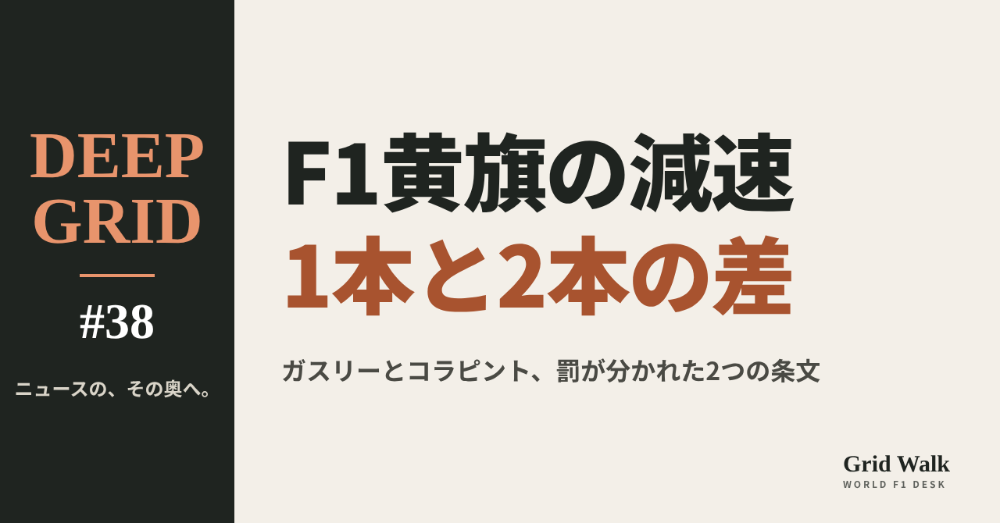
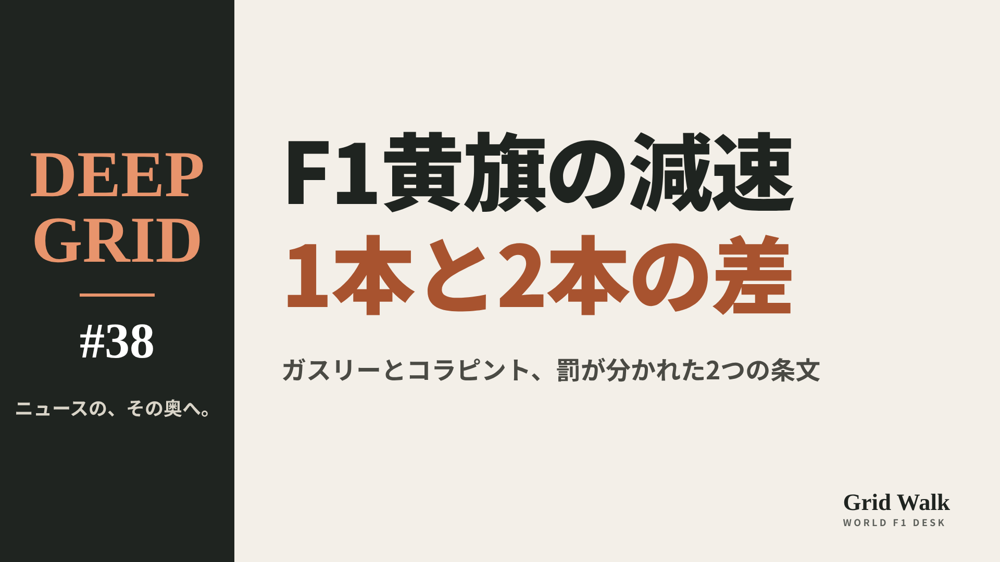
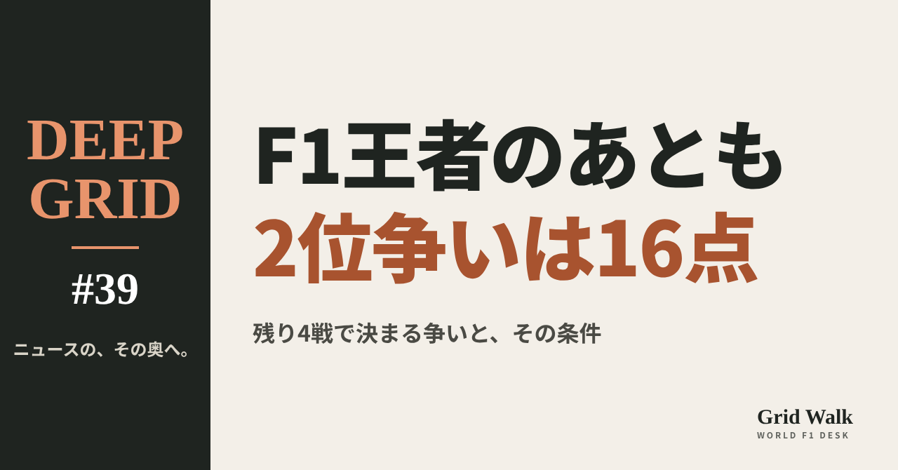
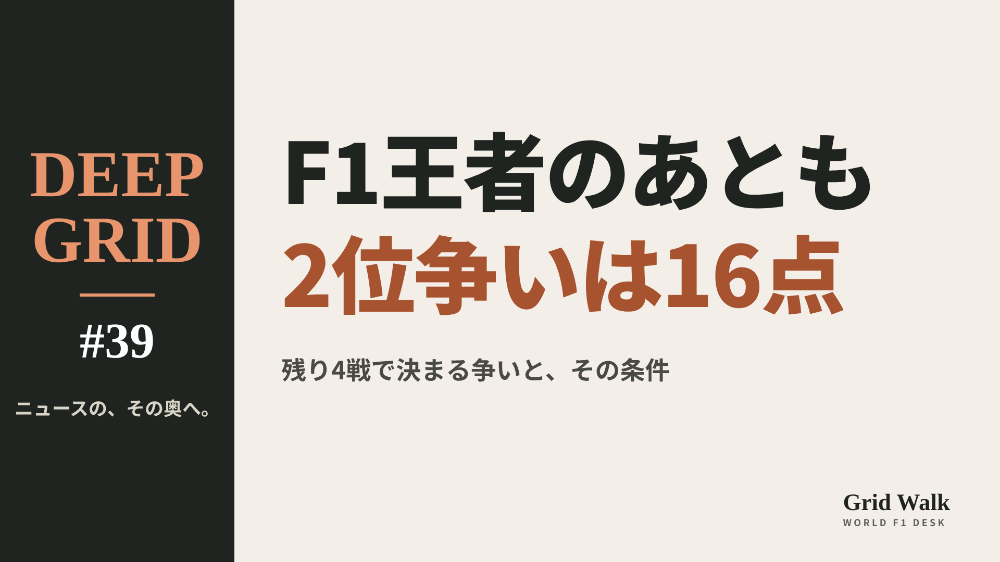

<meta charset="utf-8"><title>DEEP GRID #38・#39 note貼り付け</title>
<style>
/* one column of numbered paste steps; text steps vs image steps differ by marker */
:root{--bg:#F5F4F0;--card:#FFFFFF;--ink:#1D2321;--mute:#5F665F;--line:#DCDAD2;--btn:#1F5FBF;--btnok:#2E8B4F;--img:#E9F3EC;--imgink:#22663B;--sans:'IBM Plex Sans JP','Hiragino Sans','Noto Sans JP',sans-serif}
@media (prefers-color-scheme:dark){:root:not([data-theme="light"]){--bg:#171A19;--card:#202423;--ink:#ECEDE8;--mute:#A3AAA2;--line:#343937;--btn:#4D8BE6;--btnok:#3FA866;--img:#1E2C23;--imgink:#8FD3A6;color-scheme:dark}}
:root[data-theme="dark"]{--bg:#171A19;--card:#202423;--ink:#ECEDE8;--mute:#A3AAA2;--line:#343937;--btn:#4D8BE6;--btnok:#3FA866;--img:#1E2C23;--imgink:#8FD3A6;color-scheme:dark}
body{background:var(--bg);color:var(--ink);font-family:var(--sans);font-size:15px;line-height:1.75;padding:20px 16px 60px}
main{max-width:680px;margin:0 auto;display:grid;gap:28px}
header h1{font-size:22px;margin:0 0 6px;text-wrap:balance}
header p{margin:0;color:var(--mute);font-size:14px}
nav{display:flex;gap:8px;flex-wrap:wrap;margin-top:12px}
nav a{border:1px solid var(--line);border-radius:999px;padding:4px 14px;color:var(--ink);text-decoration:none;font-size:14px;background:var(--card)}
.part h2{font-size:18px;line-height:1.5;margin:0 0 12px;text-wrap:balance;display:flex;gap:10px;align-items:baseline;flex-wrap:wrap}
.tag{font-size:13px;background:var(--ink);color:var(--bg);border-radius:6px;padding:1px 9px}
.steps{list-style:none;margin:0;padding:0;display:grid;gap:12px}
.st{background:var(--card);border:1px solid var(--line);border-radius:12px;padding:12px;min-width:0}
.hd{display:flex;align-items:center;gap:8px;margin-bottom:8px}
.no{width:26px;height:26px;border-radius:50%;background:var(--btn);color:#fff;display:inline-flex;align-items:center;justify-content:center;font-size:13px;font-weight:700;flex:0 0 26px}
.im .no{background:var(--btnok)}
.hd em{font-style:normal;font-size:12px;background:var(--img);color:var(--imgink);border-radius:6px;padding:0 8px}
.bx{font-size:13.5px;line-height:1.7;border:1px solid var(--line);border-radius:8px;padding:8px 10px;max-height:110px;overflow:auto;overflow-wrap:anywhere}
.bx.tall{max-height:150px}.bx p{margin:0 0 6px}.bx h2{font-size:14px;margin:8px 0 4px}.bx a{color:var(--btn)}
.st img{display:block;width:100%;max-width:100%;border:1px solid var(--line);border-radius:8px}
.sub{font-size:12.5px;color:var(--mute);margin:6px 0 0}
.cp{width:100%;margin-top:8px;padding:12px;border:0;border-radius:10px;background:var(--btn);color:#fff;font:600 15px var(--sans);cursor:pointer}
.cp.ok{background:var(--btnok)}.cp.dl{background:var(--btnok)}.cp:focus-visible{outline:3px solid var(--ink);outline-offset:2px}
.xh{font-size:15px;margin:20px 0 10px}
.fb{font-size:13px;line-height:1.7;margin:8px 0 0;padding:8px 10px;border-radius:8px;background:var(--img);color:var(--imgink)}
.opts{display:grid;grid-template-columns:repeat(auto-fill,minmax(240px,1fr));gap:10px}
.opt{min-width:0}.opt img{display:block;width:100%;border:1px solid var(--line);border-radius:8px}
.ol{display:flex;align-items:center;gap:8px;margin-top:6px}.ol b{font-size:13px;flex:0 0 auto}.ol .on{font-size:12.5px;color:var(--mute);flex:1;min-width:0}.ol .cp{width:auto;flex:0 0 auto;padding:9px 14px}.ol .cp{margin:0;padding:9px}
.toast{font-size:13px;color:var(--mute);margin-top:6px}
</style>
<main><header><h1>DEEP GRID #38・#39 note貼り付け</h1><p>2本あります。青い番号は文章、緑は画像です。</p><nav><a href="#p1">#38</a><a href="#p2">#39</a></nav></header><section class="part" id="p1"><h2><span class="tag">DEEP GRID #38</span>黄旗で「十分に減速した」とは何か　ガスリーとコラピント、メキシコで罰が分かれた2つの条文【DEEP GRID #38】</h2><ol class="steps">
<li class="st im"><div class="hd"><span class="no">1</span><b>見出し画像</b><em>画像</em></div><button class="cp dl" data-img="img/alpine-yellow-flags.png" data-name="deep-alpine-yellow-flags_見出し画像.png">ダウンロード</button></li>
<li class="st"><div class="hd"><span class="no">2</span><b>タイトル</b></div><div class="bx" id="p1t">黄旗で「十分に減速した」とは何か　ガスリーとコラピント、メキシコで罰が分かれた2つの条文【DEEP GRID #38】</div><button class="cp" data-plain="p1t">タイトルをコピー</button></li>
<li class="st"><div class="hd"><span class="no">3</span><b>本文</b></div><div class="bx tall" id="p1r"><p>メキシコシティGPのレース後、アルピーヌの2台に黄旗での違反の罰が出た。ピエール・ガスリーは30秒加算とペナルティポイント2、フランコ・コラピントは10秒加算とペナルティポイント1。どちらも「減速が足りなかった」とされたのに、何が違ったのか。旗が1本か2本かで規則が求める減速の線、スチュワードが見たテレメトリー、退けられたチームの証拠を、FIAの決定文書と競技規則から読む。</p><p>データの表と、出典6件はサイトで → <a href="https://f1gridwalk.github.io/deep/alpine-yellow-flags/?utm_source=note&amp;utm_campaign=alpine-yellow-flags">https://f1gridwalk.github.io/deep/alpine-yellow-flags/?utm_source=note&amp;utm_campaign=alpine-yellow-flags</a></p><h2>先に結論</h2><p>① メキシコシティGPの決勝で、アルピーヌの2台が黄旗の区間で「求められる減速をしなかった」と判断された。ガスリーはダブルイエロー（黄旗2本）の区間、コラピントは黄旗1本の区間だ。罰はどちらもレースが終わってから出た。</p><p>② 規則は、旗の本数で求める減速の線を分けている。黄旗1本なら「速度を落とし、進路を変えられるよう備える」こと。2本なら「大きく速度を落とし、進路を変えるか止まれるよう備える」ことで、その周に意味のあるラップタイムを狙っていないことが明らかでなければならない。</p><p>③ 罰の重さも違った。文書は理由を書いていないが、違反とされた条文は、ガスリーが2本のb、コラピントが1本のaだ。ガスリーはストップ＆ゴーペナルティとペナルティポイント2、コラピントは10秒加算とペナルティポイント1。ストップ＆ゴーはレース後に出たので、規則どおり30秒の加算に置き換えられた。</p><p>④ スチュワードは、ガスリーのテレメトリーを同じ区間を通ったほかの車と比べ、「小さな減速」では足りないとした。コラピントについては、チームがテレメトリーと写真を出したが、テレメトリーとオンボードカメラを調べても十分な減速とは認めなかった。一方で、その手前のダブルイエローの区間は、警告が十分だったか疑いがあるとして違反にしなかった。</p><p>⑤ 2台は正式結果でガスリー17位、コラピント15位となり、アルピーヌはこのレースの得点を失った。</p><p><strong>黄旗での減速、どこまでなら「十分」だと思いますか？</strong></p><h2>続きは F1 Grid Walk で</h2><p>ここから先の「レース後に出た2つの決定」「1本と2本で、求められる線が違う」「スチュワードは何を見て、なぜチームの証拠を退けたか」「罰の重さと、レースの結果」は、サイトで読めます。2つの決定の比べ（FIA 文書84・85）、競技規則 B1.8.4（黄旗）第9版、レース後に科された罰の置き換え（B1.9.5 d）、正式結果の抜粋（文書86）の表も載せています。</p><p><strong>DEEP GRID #38「黄旗で「十分に減速した」とは何か　ガスリーとコラピント、メキシコで罰が分かれた2つの条文」</strong></p><p><a href="https://f1gridwalk.github.io/deep/alpine-yellow-flags/">https://f1gridwalk.github.io/deep/alpine-yellow-flags/</a></p><p>━━━━━━━━━━</p><p><strong>F1 Grid Walk では、世界のF1ニュースを毎日日本語でまとめています。</strong></p><p>海外の記事の要約を、毎日載せています。</p><p>ほかの海外記事も読みたい方は、F1 Grid Walkへ。</p><p><a href="https://f1gridwalk.github.io/">https://f1gridwalk.github.io/</a></p><p>━━━━━━━━━━</p><p><a href="https://www.fia.com/system/files/decision-document/2026_mexico_city_grand_prix_-_infringement_-_car_10_-_failing_to_slow_under_yellow_flags.pdf">出典：FIA</a></p><p><a href="https://www.fia.com/system/files/decision-document/2026_mexico_city_grand_prix_-_infringement_-_car_43_-_failing_to_slow_under_yellow_flags.pdf">出典：FIA</a></p><p><a href="https://www.fia.com/system/files/decision-document/2026_mexico_city_grand_prix_-_final_race_classification.pdf">出典：FIA</a></p><p><a href="https://www.fia.com/documents/championships/fia-formula-one-world-championship-14/season/season-2026-2072">出典：FIA</a></p><p><a href="https://www.the-race.com/formula-1/f1-2026-penalty-driving-guidelines-changes/">出典：The Race</a></p><p><a href="https://speedcafe.com/f1-news-2026-mexico-city-grand-prix-alpine-penalties-reason-why-franco-colapinto-pierre-gasly-ryo-hirakawa-debut/">出典：Speedcafe</a></p></div><button class="cp" data-rich="p1r">本文をコピー</button></li>
<li class="st"><div class="hd"><span class="no">4</span><b>ハッシュタグ</b></div><div class="bx" id="p1h">#F1 #F1jp #ガスリー #コラピント #アルピーヌ #F1ルール #DEEPGRID</div><button class="cp" data-plain="p1h">タグをコピー</button></li>
</ol><h3 class="xh">X</h3><ol class="steps">
<li class="st im"><div class="hd"><b>X用の画像</b><em>画像</em></div><button class="cp dl" data-img="img/x_alpine-yellow-flags.png" data-name="x_deep-alpine-yellow-flags.png">ダウンロード</button></li>
<li class="st"><div class="hd"><b>① noteをシェアするときの文</b></div><div class="bx" id="p1x0">黄旗1本と2本で、求められる減速は違います。ガスリーはストップ＆ゴー（30秒加算）、コラピントは10秒加算。FIAの文書と条文から読むDEEP GRID #38をnoteにまとめました #F1jp #ガスリー</div><button class="cp" data-plain="p1x0">コピー</button></li>
<li class="st"><div class="hd"><b>② ①への返信</b></div><div class="bx" id="p1x1">ほかの海外記事も読みたい方は、F1 Grid Walkへ。
https://f1gridwalk.github.io/deep/alpine-yellow-flags/?utm_source=x&amp;utm_campaign=alpine-yellow-flags</div><button class="cp" data-plain="p1x1">コピー</button></li>
<li class="st"><div class="hd"><b>③ ②への返信</b></div><div class="bx" id="p1x2">毎日の海外F1ニュースは、日本語でこちらにまとめています。
https://f1gridwalk.github.io/</div><button class="cp" data-plain="p1x2">コピー</button></li>
</ol></section><section class="part" id="p2"><h2><span class="tag">DEEP GRID #39</span>王者が決まったF1に、まだ何が残っているのか　ドライバーズ2位とチームの順位を数字で読む【DEEP GRID #39】</h2><ol class="steps">
<li class="st im"><div class="hd"><span class="no">1</span><b>見出し画像</b><em>画像</em></div><button class="cp dl" data-img="img/second-place-fight-2026.png" data-name="deep-second-place-fight-2026_見出し画像.png">ダウンロード</button></li>
<li class="st"><div class="hd"><span class="no">2</span><b>タイトル</b></div><div class="bx" id="p2t">王者が決まったF1に、まだ何が残っているのか　ドライバーズ2位とチームの順位を数字で読む【DEEP GRID #39】</div><button class="cp" data-plain="p2t">タイトルをコピー</button></li>
<li class="st"><div class="hd"><span class="no">3</span><b>本文</b></div><div class="bx tall" id="p2r"><p>メキシコシティGPで、アントネッリの王座が決まった。それでも、2026年のF1の争いは終わっていない。ドライバーズ選手権の2位は4人が16点の中にいて、メルセデスのチームの王座も、まだ数字の上では決まっていない。残り4戦で何点あれば何が決まるのかを、F1公式の順位表とFIAの規則で計算する。</p><p>データの表と、出典12件はサイトで → <a href="https://f1gridwalk.github.io/deep/second-place-fight-2026/?utm_source=note&amp;utm_campaign=second-place-fight-2026">https://f1gridwalk.github.io/deep/second-place-fight-2026/?utm_source=note&amp;utm_campaign=second-place-fight-2026</a></p><h2>先に結論</h2><p>① アントネッリの王座は決まったが、ドライバーズ選手権の2位は決まっていない。F1公式の順位表（メキシコシティGPのあと）では、2位フェルスタッペン261点、3位ハミルトン259点、4位ラッセル250点、5位ルクレール245点。残り4戦で1人が取れるのは最大100点なので、6位のノリス（221点）まで、数字の上では2位に届く。</p><p>② 順位はメキシコの1戦で大きく入れ替わった。レースの前はラッセルが2位だったが、6位に終わって4位へ下がり、優勝したフェルスタッペンが4位から2位に上がった（編集部の計算）。次のサンパウロGPでは、2位はまだ決まらない。決まるのは、早くても第21戦のラスベガスGPだ。</p><p>③ コンストラクターズ選手権は、メルセデス630点、フェラーリ504点で、差は126点。残り4戦で1チームが取れるのは最大172点だ。メルセデスは、サンパウロGPでフェラーリより3点以上多く取れば、チームの王座が決まる（編集部の計算）。</p><p>④ その下も動いている。3位争いはレッドブル382点とマクラーレン365点で17点差、5位争いはレーシングブルズ108点とアルピーヌ69点で39点差。1チームが1戦で取れるのは最大43点なので、どちらも1戦で入れ替わりうる差だ。フェラーリの2位も、数字の上ではまだ決まっていない。</p><p>⑤ メキシコでは、正式結果に入ったタイム加算でも点が動いた。ピアストリ、コラピント、ガスリーにタイムが加わり、ピアストリとアルピーヌの2台は点を失った（FIAの正式結果、英The Race）。この号の数字は、罰が入ったあとのF1公式の順位表で計算している。</p><p><strong>残り4戦、ドライバーズ2位は誰になると思いますか？</strong></p><h2>続きは F1 Grid Walk で</h2><p>ここから先の「2位から5位まで、16点の中に4人」「メルセデスのチーム王座は、サンパウロで「フェラーリより3点以上」」「フェラーリの2位と、レッドブルとマクラーレンの3位」「中団の5位争いと、レース後の罰」は、サイトで読めます。ドライバーズ選手権の上位（メキシコシティGPのあと）、メキシコの1戦で、2位争いはどう動いたか、コンストラクターズ選手権（メキシコシティGPのあと）、何点差で決まるか（残りのレースが全部行われた場合）、ポイントの付け方と、同点のとき（FIAのF1規則 セクションA）、残りの4戦、メキシコシティGPで点を動かした罰の表も載せています。</p><p><strong>DEEP GRID #39「王者が決まったF1に、まだ何が残っているのか　ドライバーズ2位とチームの順位を数字で読む」</strong></p><p><a href="https://f1gridwalk.github.io/deep/second-place-fight-2026/">https://f1gridwalk.github.io/deep/second-place-fight-2026/</a></p><p>━━━━━━━━━━</p><p><strong>F1 Grid Walk では、世界のF1ニュースを毎日日本語でまとめています。</strong></p><p>海外の記事の要約を、毎日載せています。</p><p>ほかの海外記事も読みたい方は、F1 Grid Walkへ。</p><p><a href="https://f1gridwalk.github.io/">https://f1gridwalk.github.io/</a></p><p>━━━━━━━━━━</p><p><a href="https://www.formula1.com/en/results/2026/drivers">出典：F1公式サイト</a></p><p><a href="https://www.formula1.com/en/results/2026/team">出典：F1公式サイト</a></p><p><a href="https://www.formula1.com/en/results/2026/races">出典：F1公式サイト</a></p><p><a href="https://www.formula1.com/en/latest/article/formula-1-reveals-calendar-for-2026-season.YctbMZWqBvrgyddrnauo8">出典：F1公式サイト</a></p><p><a href="https://www.formula1.com/en/latest/article/formula-1-and-fia-announce-2026-sprint-calendar.3PyLPAazrBNe8kQIS3wOfY">出典：F1公式サイト</a></p><p><a href="https://api.fia.com/system/files/documents/fia_2026_f1_regulations_-_section_a_general_provisions_-_iss_03_-_2026-06-25.pdf">出典：FIA</a></p><p><a href="https://www.fia.com/system/files/decision-document/2026_mexico_city_grand_prix_-_final_race_classification.pdf">出典：FIA</a></p><p><a href="https://www.fia.com/system/files/decision-document/2026_mexico_city_grand_prix_-_infringement_-_car_63_-_causing_a_collision.pdf">出典：FIA</a></p><p><a href="https://www.fia.com/system/files/decision-document/2026_mexico_city_grand_prix_-_infringement_-_car_10_-_failing_to_slow_under_yellow_flags.pdf">出典：FIA</a></p><p><a href="https://www.fia.com/system/files/decision-document/2026_mexico_city_grand_prix_-_infringement_-_car_43_-_failing_to_slow_under_yellow_flags.pdf">出典：FIA</a></p><p><a href="https://www.the-race.com/formula-1/winners-and-losers-from-f1s-2026-mexican-grand-prix/">出典：The Race</a></p><p><a href="https://grandepremio.com/en/f1/antonelli-seals-f1-title-in-mexico-but-verstappen-and-hamilton-ignite-battle-for-second/">出典：Grande Prêmio（英語版）</a></p></div><button class="cp" data-rich="p2r">本文をコピー</button></li>
<li class="st"><div class="hd"><span class="no">4</span><b>ハッシュタグ</b></div><div class="bx" id="p2h">#F1 #F1jp #フェルスタッペン #ハミルトン #メルセデス #F1順位 #DEEPGRID</div><button class="cp" data-plain="p2h">タグをコピー</button></li>
</ol><h3 class="xh">X</h3><ol class="steps">
<li class="st im"><div class="hd"><b>X用の画像</b><em>画像</em></div><button class="cp dl" data-img="img/x_second-place-fight-2026.png" data-name="x_deep-second-place-fight-2026.png">ダウンロード</button></li>
<li class="st"><div class="hd"><b>① noteをシェアするときの文</b></div><div class="bx" id="p2x0">王者アントネッリが決まっても、ドライバーズ2位争いは4人が16点の中。メルセデスはサンパウロでフェラーリより3点以上多ければチームの王座も。数字で読むDEEP GRID #39をnoteにまとめました #F1jp #F1</div><button class="cp" data-plain="p2x0">コピー</button></li>
<li class="st"><div class="hd"><b>② ①への返信</b></div><div class="bx" id="p2x1">ほかの海外記事も読みたい方は、F1 Grid Walkへ。
https://f1gridwalk.github.io/deep/second-place-fight-2026/?utm_source=x&amp;utm_campaign=second-place-fight-2026</div><button class="cp" data-plain="p2x1">コピー</button></li>
<li class="st"><div class="hd"><b>③ ②への返信</b></div><div class="bx" id="p2x2">毎日の海外F1ニュースは、日本語でこちらにまとめています。
https://f1gridwalk.github.io/</div><button class="cp" data-plain="p2x2">コピー</button></li>
</ol></section></main><script>
function done(b,msg){const t=b.dataset.t||b.textContent;b.dataset.t=t;b.classList.add('ok');b.textContent=msg||'コピーしました';setTimeout(()=>{b.classList.remove('ok');b.textContent=t},2000)}
function selectEl(el){const r=document.createRange();r.selectNodeContents(el);const s=getSelection();s.removeAllRanges();s.addRange(r)}
async function rich(el,b){
  try{await navigator.clipboard.write([new ClipboardItem({'text/html':new Blob([el.innerHTML],{type:'text/html'}),'text/plain':new Blob([el.innerText],{type:'text/plain'})})]);done(b);return}catch(e){}
  selectEl(el);let ok=false;try{ok=document.execCommand('copy')}catch(e){}
  if(ok){getSelection().removeAllRanges();done(b)}else{done(b,'選択しました。コピーしてください')}}
async function plain(el,b){
  try{await navigator.clipboard.writeText(el.innerText);done(b);return}catch(e){}
  selectEl(el);let ok=false;try{ok=document.execCommand('copy')}catch(e){}
  if(ok){getSelection().removeAllRanges();done(b)}else{done(b,'選択しました。コピーしてください')}}
let dlns=null;(async()=>{try{dlns=await window.claude?.use?.("downloads")}catch(e){dlns=null}})();
async function img(src,b){
  b.dataset.t=b.dataset.t||b.textContent;
  if(!dlns){try{dlns=await window.claude?.use?.("downloads")}catch(e){}}
  if(!dlns){b.textContent='ダウンロードできませんでした';setTimeout(()=>{b.textContent=b.dataset.t},3500);return}
  try{const blob=await fetch(src).then(r=>r.blob());b.textContent='保存の確認を開いています…';
    await dlns.save({filename:b.dataset.name,data:blob});done(b,'ダウンロードしました')}
  catch(e){const c=e&&e.code;b.textContent=c==='declined'?'キャンセルしました':c==='rate_limited'?'少し待ってからもう一度押してください':'ダウンロードできませんでした';setTimeout(()=>{b.textContent=b.dataset.t},3500)}}
document.querySelectorAll('.cp').forEach(b=>b.addEventListener('click',()=>{
  if(b.dataset.rich)rich(document.getElementById(b.dataset.rich),b);
  else if(b.dataset.plain)plain(document.getElementById(b.dataset.plain),b);
  else img(b.dataset.img,b)}));
</script>